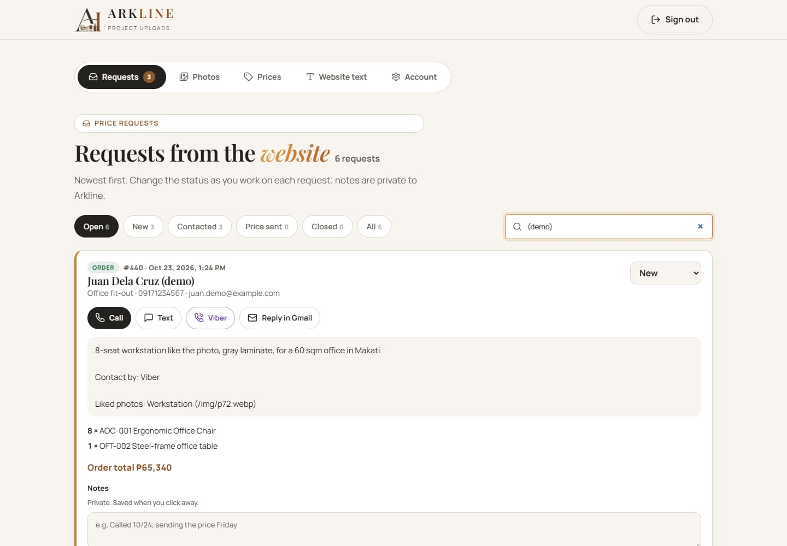

Everything the Arkline team needs to answer customers and keep the website up to date. No technical knowledge needed, and nothing can be deleted by accident: every delete asks first, and most can be undone.
Open your website address followed by /admin (for example arkline.pages.dev/admin). Bookmark it, or add it to your phone's home screen.
Tap Continue with Google and choose the Arkline Gmail. Or type the email and password.
On a phone, the ☰ button at the top opens the menu: Requests, Photos, Prices, Website text, Account.
On the sign-in screen tap Forgot password?, enter the email and tap Send reset link.
Open the newest email from Supabase and tap the link. It works once and for about an hour.
Type the new password twice (8+ characters, letters and numbers) and tap Save new password.
New orders and price requests arrive in Requests, newest first. The red number on the tab shows how many are still new.

Read the label. Order = the customer picked shop items; confirm stock, delivery fee and the 70% down payment. Price request = custom work; work out a price. "Prefers Viber" shows how they want to be contacted.
Reply in one tap: Call, Text, Viber, Messenger, or Reply in Gmail, which opens an email that's already written. Replace the part in [brackets] with the real price and details, then send.
Change the status so the team knows where each customer is (see the table below).
Add a private note like "Called 10/24, sending price Friday". It saves when you tap outside the box. Customers never see notes.
Find a customer by typing their name, phone, email or #number in the search box.
| Status | Use it when |
|---|---|
| New | Just arrived; nobody has replied yet. |
| Contacted | You've called or messaged them; you're working out details. |
| Price sent | They have the full price and are deciding. |
| Closed | Finished: ordered and delivered, or they decided not to. Closed requests leave the "Open" list but are kept. |
In Requests, tap Download (the ⬇ button next to search).
A file named like arkline-requests-2026-10-30.csv is saved. It opens in Excel or Google Sheets, with every request, item, total, contact detail and note.
Upload it to a Google Drive folder called "Arkline backups". The website's free plan keeps no backups, so this file is your copy.
Changes show on the website within 30 seconds of saving. Refresh the website to check.
Choose the category, an optional caption, then pick photos from your phone and tap Upload. They're shrunk and stamped with the see-through Arkline logo in the centre automatically, so competitors can't reuse them unmarked.
The 🗑 on a photo moves it to Trash at the bottom. Restore brings it back.
Delete forever works only for photos you uploaded. The website's original photos can be hidden and restored, never lost.
Change a name, price or feature (one per line) and tap Save. For a range, fill "Price to"; leave it empty for one fixed price.
Out of stock for now? Untick Show on website and Save. Tick it again later.
Add chair / Add table creates a new item. Delete removes one for good, so prefer unticking.
"Starts at" prices at the bottom show a rough price on each project type, e.g. 18000 + "per seat". ✕ clears a row; nothing changes until you tap Save.
Edit the headline, services, "how to order" steps, FAQs, phone numbers, email, address, Facebook page and Viber number.
Put *stars* around a word in a headline to colour it gold.
Each section has its own Save. Restore original brings back the launch wording if an edit goes wrong.
Change password: type the current one, then the new one twice.
Used a shared or borrowed phone? Sign out on all devices signs out everywhere, including there.
Auto sign-out: after 30 minutes without use the admin page signs itself out, with a one-minute warning first. Change the time (15 minutes to 2 hours, or Never) under Auto sign-out.